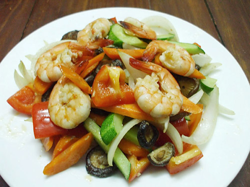

Tôm nõn xào nấm

Tôm là thực phẩm quen thuộc trong bữa ăn hàng ngày của nhiều gia đình vì thịt tôm ngọt ngon, thành phần dinh dưỡng cao và khả năng linh động trong việc chế biến món ăn rất đa dạng của nó. Nhằm góp phần làm phong phú thêm thực đơn các món ăn có sự góp mặt của nguyên liệu thơm ngon này, monan9.com sẽ hướng dẫn các bạn cách làm tôm xào nấm cho mâm cơm thêm hấp dẫn như sau:
Chuẩn bị nguyên liệu làm tôm xào nấm
-
Chuẩn bị nguyên liệu làm tôm xào nấm
- Tôm sú loại vừa: 250g;
- Nấm rơm: 150g;
- Nấm trâm vàng: 150g;
- Nấm bào ngư: 100g;
- Hành lá, ngò rí: 50g;
- Ớt sừng: 3 trái;
- Hành khô, tỏi: 30g;
- Gia vị: Hạt nêm, bột ngọt, đường, ớt bột, tiêu, dầu ăn.
-
Sơ chế nguyên liệu làm tôm xào nấm
- Hành khô, tỏi: Làm sạch, băm nhuyễn;
- Tôm sú: Rửa sạch, bóc vỏ bỏ đầu, để nguyên đuôi, rút đường chỉ đen trên sóng lưng. Ướp tôm với 1 thìa hành tỏi băm nhuyễn, 1 thìa hạt nêm, ½ thìa bột ngọt, ¼ thìa đường, ½ thìa nước mắm, 1 thìa dầu ăn trong 15 phút để tôm ngấm gia vị;
- Nấm rơm: Cắt bỏ đuôi, rửa sạch, chẻ làm đôi;
- Nấm trâm vàng: cắt bỏ đuôi, tách sợi, rửa sạch;
- Nấm bào ngư: Cắt bỏ đuôi, rửa sạch, tước miếng nhỏ;
- Hành lá, ngò rí: Nhặt và rửa sạch, thái mịn hành lá, ngò rí cắt khúc 3cm;
- Ớt sừng: Bỏ cuống, rửa sạch, thái lát;
-
Thực hiện làm món tôm xào nấm cho mâm cơm thêm hấp dẫn
- Phi thơm 2 thìa dầu ăn với 1 thìa hành tỏi băm nhuyễn và một ít ớt bột để món ăn có màu sắc hấp dẫn;
- Cho tôm vào xào nhanh tay khoảng 2 phút rồi cho nấm rơm, nấm tram vàng, nấm bào ngư vào, đảo đều tay với lửa lớn;
- Nêm thêm 1 thìa hạt nêm, 1 thìa bột ngọt, ½ thìa tiêu sao cho vừa ăn;
- Tiếp tục thực hiện cách làm tôm xào nấm. Khi thấy món ăn vừa chín tới, bạn cho hành lá, ớt thái lát vào, đảo nhẹ rồi tắt bếp;
- Cho món tôm xào nấm ra đĩa dáng dài, dàn đều sao cho đẹp mắt và hấp dẫn, cho ớt that lát, tôm lên trên, rắc thêm một ít tiêu và ngò rí nữa là bạn đã hoàn thành món ăn rồi đấy. Thật nhanh gọn và hấp dẫn phải không?
-
Yêu cầu và thưởng thức món ăn:
- Món tôm xào thập cảm được trình bày đẹp mắt, có vị vừa ăn;
- Thịt tôm tươi, ngot ngon, ngấm đều gia vị;
- Nâm rơm, nấm trầm vàng, nấm bào ngư vừa chín tới, tươi ngon, ngấm gia vị và vị ngọt của tôm;
- Hành lá, ngò rí có màu xanh nuột làm món ăn thêm hấp dẫn;
- Món tôm xào thập cẩm này bạn nên dùng lúc nóng kết hợp với món canh và món mặn để làm cho mâm cơm thêm hấp dẫn, ngon miệng và bổ dưỡng nhé.
Trên đây, là cách làm tôm xào nấm cho mâm cơm thêm hấp dẫn với cách thức chế biến khá đơn giản, tiện lợi mà không mất quá nhiều thời gian nhưng lại mang đến cho cả gia đình bạn một món ăn vừa thơm ngon, hấp dẫn vừa bổ dưỡng, chính vì thế món ăn này là sự lựa chọn phù hợp cho những chị em công sở không có nhiều thời gian cho việc nấu nướng đấy. Chúc bạn chế biến thành công và ăn ngon miệng nhé.